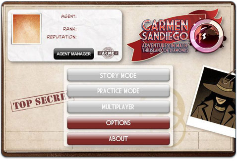

6 |
Playing the Game for the First Time |
 |
|
In this game, you play a detective with the ACME Detective Agency. ACME’s mission is to track down the villain.
And it’s your job to find the villain’s secret headquarters and arrest him or her.
Before you play the game for the first time, you need to create your game character.

Once you’ve created your game character, you can edit your name with the Edit Agent button.
Use the Agent Manager to create, delete, or play with other game characters.
Now that you’ve created your game character, you can use all the options on the game menu. You’re ready to play!
|
 |
 |
 |